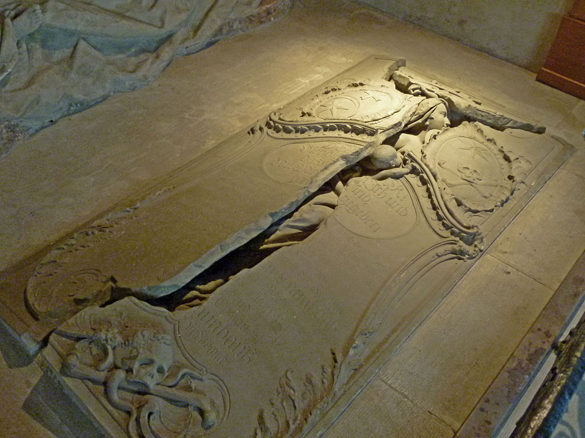
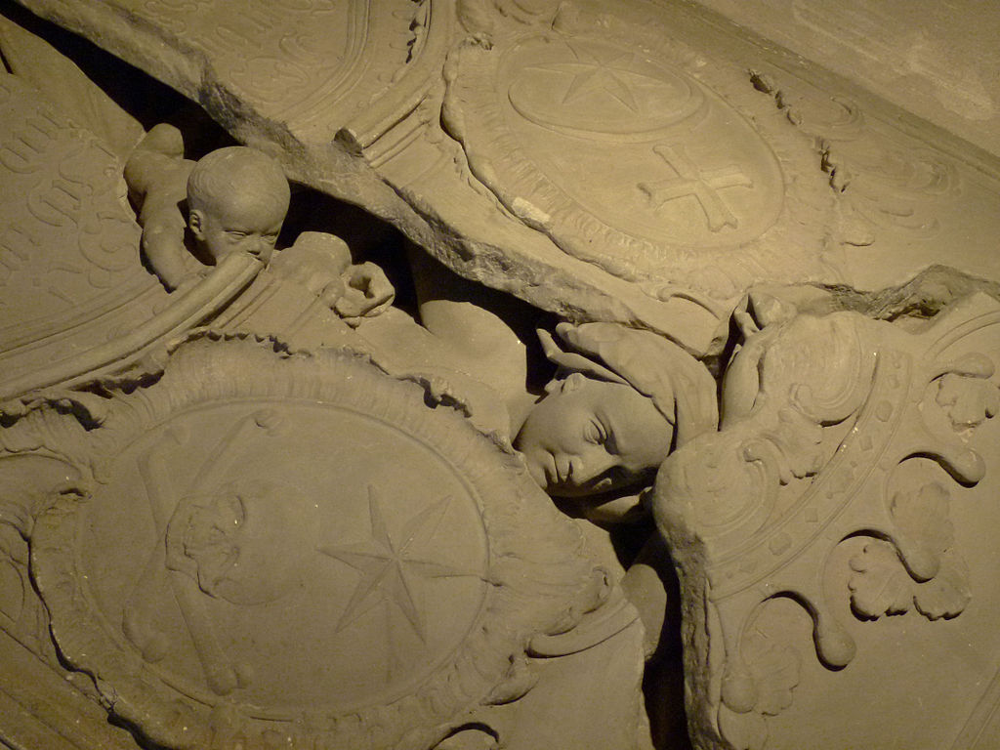

Immer wieder weckt es unser Staunen, ja unsere Ergriffenheit, wenn wir sehen, wie eine kleine, aufkeimende Pflanze in all ihrer Zartheit stark genug ist, einen Riss im Strassenbelag weiter aufzubrechen und ungehindert ihr Wachstum zu entfalten, bis hin zur Staude, zum Strauch, zum Baum. Ähnliche Empfindungen werden beim Betrachten des Grabmals in der Kirche Hindelbank (Kanton Bern) wach. Zu sehen ist eine im Boden eingelassene Grabplatte aus Sandstein. Die Platte wird aufgebrochen von einer jungen Frau. Mit dem einen Arm drückt sie kraftvoll gegen den Stein, mit dem anderen Arm gibt sie ihrem nackten Säugling Halt, der sich eben anschickt, auf allen vieren aus dem Spalt zu kriechen. Es handelt sich offenkundig um eine Mutter, die zusammen mit ihrem Neugeborenen im Wochenbett oder vielleicht schon während der Geburt verstorben ist. Und nun ist der Jüngste Tag angebrochen, die Posaunen schmettern, der Stein zerbricht, die schöne Tote wird mitsamt ihrem Kind wieder lebendig und entsteigt dem kalten Grab, hinaus an die Sonne, in ein neues Leben.
Der sanfte Sieg über den Tod
Das Auferstehungswunder, das sich hier in künstlerisch bemerkenswerter Form zeigt, wirkt umso eindrücklicher, als sich an der Rückwand der Grabnische ein weiteres Bildwerk befindet, das mit der rührenden Schlichtheit der Auferstehungsszene augenfällig kontrastiert: das prunkvolle und wuchtige Grabmal des Berner Schultheissen Hieronymus von Erlach mit herrschaftlichem Familienwappen, Standarten, Hellebarden, einer imperialen Grabinschrift, einem Engel und mehreren allegorischen Figuren. Krasser könnte der Gegensatz nicht sein: hier die Zurschaustellung weltlichen und kriegerischen Glanzes, dort der sanfte Sieg der Glanzlosen über den Tod. Bei der aufbrechenden Steinplatte mit Mutter und Kind handelt es sich um das Grabmal der Pfarrfrau Maria Magdalena Langhans. Es war im Jahr 1751, als im Pfarrhaus Hindelbank ein aus Deutschland stammender Bildhauer bei Pfarrer Georg Langhans sein Quartier aufschlug. Der Gast hiess Johann August Nahl; er hatte den Auftrag erhalten, für den drei Jahre zuvor verstorbenen Berner Schultheissen und Kriegsmann Hieronymus von Erlach in der Kirche ein würdiges Grab zu schaffen. In der Karwoche brach Unglück über die Pfarrfamilie herein: Die Frau starb im Alter von 28 Jahren bei der Geburt ihres ersten Kindes. Der Knabe starb kurz darauf ebenfalls. Der Bildhauer war erschüttert. Es drängte ihn, die Tragödie auf seine Weise zu verarbeiten. Er machte sich ans Werk und schuf Mutter und Kind ein Grabmal, das an persönlichem Ausdruck und künstlerischer Tiefe jenes zu Ehren des Schultheissen bei Weitem übertrifft. Dass sich der Tod der Pfarrfrau und ihres Neugeborenen ausgerechnet am Ostersamstag ereignete, gibt der dargestellten Auferstehungsszene eine besondere Bedeutung und schlägt einen direkten Bogen zur Auferstehung Jesu an Ostern. Im Heimatbuch Burgdorf, Band 1, wird das Grab als «eine der schönsten Bildhauerarbeiten der Schweiz» gepriesen, «welche, keinen konventionellen Regeln gehorchend, einzig aus mitfühlendem Herzen geschaffen, ein Kleinod ihrer Art darstellt».
Bedeutungsschwerer Riss in der Steinplatte: Grabmal der Maria Magdalena Langhans. (Foto: Wikimedia Commons/Ginkgo)
Ab der zweiten Hälfte des 18. Jahrhunderts entstand um das Grabmal ein regelrechter Kult. Zu den Besuchern zählten nebst dem Dichter Johann Wolfgang von Goethe und dem Philosophen Arthur Schopenhauer auch der österreichische Staatsmann Karl Graf von Zinzendorf sowie der Schweizer Kunstmaler Albert Anker. In dieser Zeit entstanden zahlreiche Kopien und Bilder des Grabes, die als Souvenirs verkauft wurden. Hindelbank war damals Station für die Postkutschen; so erfuhren die Reisenden manchmal auch zufällig, dass sie sich hier die Haltezeit mit der Besichtigung eines besonderen Kunstwerks verkürzen konnten. Die Besucher äusserten sich über das Grab meist enthusiastisch. «Der Künstler hat hier den entscheidenden Übergang vom Tode zur Unsterblichkeit mit aller Kraft der Wahrheit und des Ausdrucks dargestellt. Man fühlt den grossen Augenblick, worin Zeit und Ewigkeit zusammenhängen. Und wie einfach und wie wahr! Wie edel und rein von allem Gemeinen, von allem Ekelhaften, das die Künstler nur zu oft in ihren Vorstellungen und Verzierungen bei Grabmonumenten einzumischen pflegen!», schwärmte zum Beispiel der deutsche Philosoph und Kunsthistoriker Christian Cay Lorenz Hirschfeld in seinen Neuen Briefen über die Schweiz (1776/1785). Nüchterner sah es der Zürcher Pfarrer und Schriftsteller Johann Caspar Lavater, der 1777 an seine Frau schrieb: «Zu Hindelbank besahen wir uns die berühmten Grabmäler – auch das, welches die Auferstehung einer an ihres Kindes Geburt gestorbenen Frau Pfarrerin vorstellt.» Wohl habe der Bildhauer das Werk gut ersonnen und fleissig ausgearbeitet; dennoch sei es «im Grunde unerträglich dumm und nicht gedacht gemacht. Sie hat keinen Raum zu liegen, der Stein würde sie zerquetschen, wenn er zugeschlossen wäre.»
Das Interesse bleibt wach
Heute ist das Langhans-Grab längst nicht mehr der Anziehungspunkt von einst. Und doch kommen immer wieder Leute in Hindelbank vorbei, um das Kunstwerk zu besichtigen. «Häufig auch von weit», sagt der vor Ort tätige Pfarrer Christian C. Adrian. «Und so fragen sie bei mir telefonisch an, ob die Kirche dann auch offen sei.» Im Mai 2018 habe die Stiftung «Preussische Schlösser und Gärten» mit Sitz in Berlin Brandenburg ihre jährliche Fortbildungsreise in der Schweiz durchgeführt. Zum Abschluss besuchten die rund 30 Personen das Grabmal in Hindelbank. Der Kirchgemeinderat bereitete der Reisegesellschaft einen Empfang mit anschliessendem Imbiss. «Dadurch ergab sich eine sehr schöne Begegnung, nicht zuletzt zwischen uns relativ Wohlhabenden in der Schweiz und einem viel ärmeren Ostdeutschland», sagt Pfarrer Adrian. Für ihn persönlich ist das Grabmal «eine Erinnerung an die Vergänglichkeit meines eigenen Lebens, verbunden mit der Frage, wie ich diese Lebenszeit gestalten will; wie ich das Wichtige vom Unwichtigen unterscheiden kann – und ob sich diese Unterscheidung in meinem Leben dann auch wirklich zeigt».
Die auferstehende Mutter und ihr Kind bahnen sich den Weg vom Dunkel ins Licht. (Foto: Wikimedia Commons/Ginkgo)
Hans Herrmann ist Journalist sowie Autor von Bühnenstücken und historischen Romanen. Er leitet die Redaktion Bern der Zeitung «reformiert.».
Weitere Artikel von {{author.author}} finden Sie hier:
Zur Vertiefung:
- Jürg Schweizer, Kunstführer Emmental, 1982, S. 61-62
- Faltblatt der reformierten Kirchgemeinde Hindelbank, Die Kirche von Hindelbank und ihre Kunstdenkmäler Diverse Autoren, Heimatbuch Burgdorf, Band 1, 1930, S. 510-511
- Fritz Egli, Das Grabmal von Hindelbank, Goethe-Gesellschaft, www.goethe-gesellschaft.ch/hindelbank.html